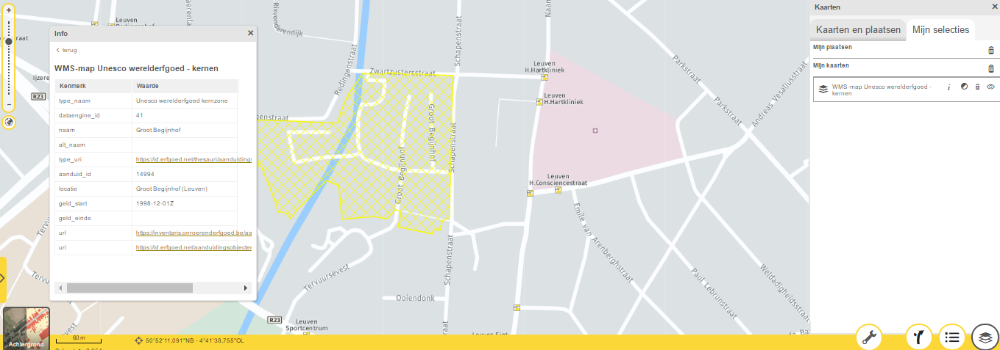

Web Services to Access Spatial Data
How they work, tools use and examples. Recommended Software, relevant standards and exercises
WELCOME!
With the following slides and interactive material you will be able to take part in the journey to discover Spatial Data Infrastructures (SDI) its components and benefits through the observation of multiple examples and exercises.
You can navigate through the course by pressing the navigation arrows at the bottom of each slide or using your arrow keys on your keyboard. You can move horizontally (← →) for viewing each theme and vertically (↑↓) to view extra recommended information
Web services to access spatial data
Web Services in Action
Examples of incompatibility and inconsistency of spatial data
Use case: map of Unesco site in Leuven
Let’s start with a demo…
Use case: map of Unesco site in Leuven
- First I’ll go to http://www.geopunt.be/ because I know there is a good chance to find a Flemish map there
- I type in the search criteria ‘Unesco’
Use case: map of Unesco site in Leuven
After a click on the first search result
Use case: map of Unesco site in Leuven
Now there are multiple possibilities:
- Click on the link of the owner (‘Agentschap Onroerend Erfgoed’)
- Click on the ‘Show on map’ (Bekijk op kaart) button
- Click on the metadata button
- Download the data
Click on the link of the owner
On the website of the data owner I see a link to the own geo-portal.
There I see the same area (brown with yellow), but this map also shows other related layers from the same data producer.
Click on the ‘Show on map’ button
Combine it with other maps (other themes) like historical maps
Click on the metadata button
Abstract, contact information (again with a link to the website / geo-portal of the data producer)…
Use case: map of Unesco site in Leuven
Questions:
- So who has the data?
- Is the data duplicated for each geo-portal?
- Who maintains the data and how is this data updated on all 3 geo-portals?
Answers:
- With open standards as Web Viewing Service it is possible to keep the data in one place only, the logical choice would be with the data producer
- All the geo-portals link to the same Web Viewing Service
- The data itself (shapefile, geo-database…) is kept securely on a private network behind the Web Viewing Service
Why do I need geo web services?
- Web mapping is about more than google maps
- It's possible to:
- Share your own map data with everyone regardless of the software they use
- And choose how far you want to go:
- Only allow viewing = WMS
- Also allow downloading = WFS
- Also allow online editing = WFS-T (transactional WFS)
- And choose how far you want to go:
- Combine your map data with map data from others
- Create a web page / web application with your map data
- Share your own map data with everyone regardless of the software they use
- It’s a requirement for any SDI to set up services so your data can be found and accessed
How the WWW works
The World Wide Web: how does it work?
Different protocols work together
Browser
HTTP / HTTPS
TCP/I¨P
IPv4
PPP/…
Cable
The World Wide Web: how does it work?
Definition of web service (3WC):
“A software system designed to support (interoperable) machine-to-machine interaction over a network.”
Web services allow us to create client/server applications
Websites are for humans ↔ Web Services are for software
No GUI (Graphical User Interface) – only usable within applications
Introduction
Web services advantages:
Provide interoperability between various software applications
Accessible via each network supporting open standards
Allow software and services from different organisations and locations to be combined easily to provide an integrated service
Are self-describing
Web Services main disadvantage:
Overhead: transmitting data (usually in XML) is not as efficient as using binary code. What you win in portability, you lose in efficiency.
How to request a service?
Remote procedure calls (RPC)
A Client sends a request message to a known remote server to execute a specified procedure with supplied parameters
The remote server sends a response to the client
Ex.:

Service-oriented architecture (SOA):
The basic unit of communication is a XML message
"message-oriented" services
Relevant Standards
Principles of Open Standards
- Availability
- Open Standards are available for all to read and implement.
- Maximize End-User Choice
- Open Standards create a fair, competitive market for implementations of the standard. They do not lock the customer in to a particular vendor or group.
- No Royalty
- Open Standards are free for all to implement, with no royalty or fee. Certification of compliance by a standards organization may involve a fee.
- INSPIRE: Maximum Reuse of existing standards (OGC, ISO, W3C)
World Wide Web Consortium (W3C)
- Founded in 1994 (Tim Berners-Lee)
- Define standards for the Internet
- Initial specifications for URIs (Uniform Resource Identifiers), HTTP (Hypertext Transfer Protocol), and HTML (HyperText Markup Language)
- 327 members (31/12/14)
- 449 specifications
- including 131 W3C Recommendations
World Wide Web Consortium (W3C)
XML: eXtensible Markup Language
- World Wide Web Consortium (W3C) recommendation
- Designed to describe data in textual format
- XML does not DO anything!
- XML (describe data), is NOT HTML (present data)
- Filename extension: .xml
Define your own tags (no predefined tags like HTML)
XML Example
<?xml version="1.0" encoding="UTF-8" ?>
<painting>
<img src="madonna.jpg" alt="Madonna" />
<caption>This is Raphael's Foligno Madonna
<date>1511</date>
<date>1512</date>
</caption>
</painting>
Module “XML and UML”
Open Geospatial Consortium
Founded in 1994
Solve the issue of spatial data sharing and interoperability
Sets the standards that allow geographic information systems to interoperate
470+ members and growing
34 “core” standards
15 extensions/profiles
03 | WMS – Web Map Service
- As its name implies, it is a service that provides maps
- The data leaves the server only as an image
- The map is rendered on the server, so styling and presentation are chosen by the data provider
- Limited client interactivity with the map
- Current version: 1.3 (is the same as ISO 19128)
Note:
Source data from which the image is generated need not to be an image. It can be a Shapefile, PostGIS database, Oracle Spatial,…
Opengeo.org
WMS – Web Map Service
03 | WMS – Web Map Service
WMS Server can do one of 3 things (WMS operations)
- Produce a map (as an image)
- getMap
- Answer basic queries about the content of the map
- getFeatureInfo (returns an XML with attributes)
- Tell other programs what maps it can produce and which of those can be queried further
- getCapabilities (returns an XML file with the metadata)
WMS – GetCapabilities Request
Provides the following information:
Image formats it can serve (jpeg, png, gif…)
List of the map layers
List of layers supporting the optional GetFeatureInfo interface
List of available spatial reference systems
List of exception formats for return of exceptions
(optional) SLD styles
(optional) Vendor specific capabilities (or properties)
Example
http://demo.opengeo.org/geoserver/wms?SERVICE=WMS&REQUEST=GetCapabilities
Response is a XML file
http://demo.opengeo.org/geoserver/wms?The 'root' URL of the service.SERVICE=WMSRequest for a WMS serviceREQUEST=GetMapRequest for a map imageLAYERS=topp:statesWhich layer? Multiple layers possible with comma separated listSRS=EPSG:4326The projection we are requesting using the EPSG codeBBOX==-124.731,24.956,-66.97,49.372Bounding box coordinateFormat: “MinX, MinY, MaxX, MaxY”
WIDTH=600Width of image we wantHEIGHT=255Height of image we wantFORMAT=image/pgnImage type (possibilities: png, jpeg, gif & tiff)STYLES=In case the WMS service offers multiple styling. Blanc → default styleTo be found in the GetCapabilities
TRANSPARENT=FALSEWill image be transparent in areas of no data
WMS – GetMap Request
Image
Error
<ServiceExceptionReport version="1.1.1">
<ServiceException code="">
WIDTH and HEIGHT incorrectly specified
</ServiceException>
</ServiceExceptionReport>
WMS – GetMap Response
WMS – GetFeatureInfo Request
Example:
http://demo.opengeo.org/geoserver/wms?SERVICE=WMS&REQUEST=getfeatureinfo&LAYERS=topp:states&BBOX=-124.731,24.956,-66.97,49.372&FORMAT=image/png&WIDTH=600&HEIGHT=255&X=100&Y=100&query_layers=topp:states http://www.ruimtemonitor.be/geoserver/wms?service=wms&request=getfeatureinfo&LAYERS=gemeenten_2003_rb&FORMAT=image/png&BBOX=21000,150000,117000,246000&WIDTH=256&HEIGHT=256&X=200&Y=200&query_layers=gemeenten_2003_rbResponse = XML or text file (dependent on your WMS server software)
<?xml version="1.0" encoding="UTF-8"?>
<FeatureInfoResponse>
<FIELDS FEMALES="226581" MALES="227007" POP1999="482025" STATE_NAME="Wyoming" _ID_="6" _SHAPE_="[Geometry]" _LAYERID_="0"/>
</FeatureInfoResponse>
→ response can be formatted by the (web) application
WFS – Web Feature Service
Provides map data (GML) to a (web) client
The client chooses style & presentational details
Geospatial features
Optional: Transactional Web Feature Service (WFS-T) enables the creation, deletion, and updating of features
Current version 2.0
= ISO 19142
Opengeo.org
CSW – Catalogue Service FT Web
A catalogue server publishes collections of descriptive information (metadata) about geospatial data
Defines interface to search for metadata (so you could ‘discover’ geospatial data)
Transaction: insert, update & delete of metadata
Harvest (optional) - create/update metadata by asking the server to 'pull' metadata from a specified target
Module “Metadata and catalogue services”

CSW – Some Operations
getCapabilities
Metadata about the service itself (indicating abilities, contact information…)
- http://metadata.geopunt.be/zoekdienst/srv/dut/csw?service=CSW&request=GetCapabilities
getRecords
Does a search
http://metadata.geopunt.be/zoekdienst/srv/dut/csw?service=CSW&version=2.0.2&request=GetRecords&CONSTRAINTLANGUAGE=CQL_TEXT&resultType=results
getRecordById
Returns the metadata (default representation) of a specific record using their identifier
http://metadata.geopunt.be/zoekdienst/srv/dut/csw?service=CSW&version=2.0.2&request=GetRecordById&id=DE022DEF-20BF-4016-82A1-57BCC917AF4E
All return a XML document

CSW – GetRecords Response
CSW – GetRecordsByID Request
Geographic Markup Language
Standard way for data to be passed from one geographic application to another
Is the XML grammar defined by the Open Geospatial Consortium (OGC) to express geographical features.
Response of WFS requests is GML
Filename extension: .gml
<gml:MultiLineString srsName="http://www.opengis.net/gml/srs/epsg.xml#27354">
<gml:lineStringMember>
<gml:LineString>
<gml:coordinates decimal="." cs="," ts=" "> 494475.71056415,5433016.8189323
494982.70115662,5 435041.95096618 </gml:coordinates>
</gml:LineString>
</gml:lineStringMember>
</gml:MultiLineString>
Module “Basic concepts of XML and GML”
GML example: Geometries
04 | Software and Tools
Desktop clients:
QGIS
ESRI ArcGIS for Desktop
uDIG
Kosmo
MapWindow
Web mapping clients comparison:
http://geotux.tuxfamily.org/index.php/en/geo-blogs/item/291-comparacion-clientes-web-
WMS/WFS Clients and Servers
Servers:
|
|
Software to use for the following exercise
Visit the following tools and software sites:
OpenGeo Suite
Software to use for the following exercise
Software to use for the following exercise
05 | Exercises
Exercise: objective
05 | Geoserver
Geoserver: installation
05 | Geoserver: installation
Geoserver: installation
Geoserver: configuration
Geoserver: configuration
Exercise: Publishing a Shape File
Exercise: Publishing a Shape File
Exercise: Publishing a Shape File
05 | Exercise: Publishing a Shape File
Exercise: Publishing a Shape File
Exercise: Publishing a Shape File
Exercise: Publishing a Shape File
Exercise: Publishing a Shape File
Exercise: Publishing a Shape File
Exercise: Publishing a Shape File
Exercise: Publishing a Shape File
05 | Exercise: Publishing a Shape File
Reference list
- Kralidis, A. T. (2007). Geospatial web services: The evolution of geospatial data infrastructure. In The Geospatial Web (pp. 223-228). Springer, London.
- van den Brink, L., Barnaghi, P., Tandy, J., Atemezing, G., Atkinson, R., Cochrane, B., ... & Janowicz, K. (2019). Best practices for publishing, retrieving, and using spatial data on the web. Semantic Web, 10(1), 95-114.
- Rautenbach, V., Coetzee, S., & Iwaniak, A. (2013). Orchestrating OGC web services to produce thematic maps in a spatial information infrastructure. Computers, Environment and Urban Systems, 37, 107-120.
- Clabby, J. (2003). Web services explained: Solutions and applications for the real world. Prentice Hall Professional.